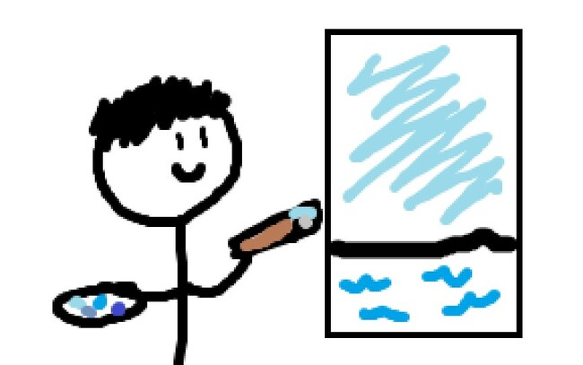
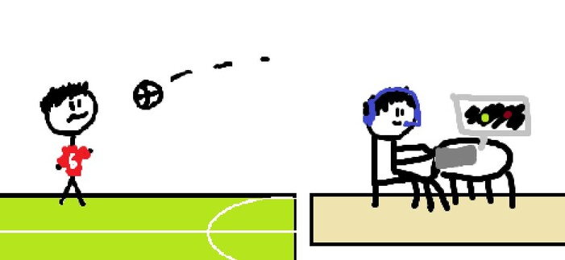
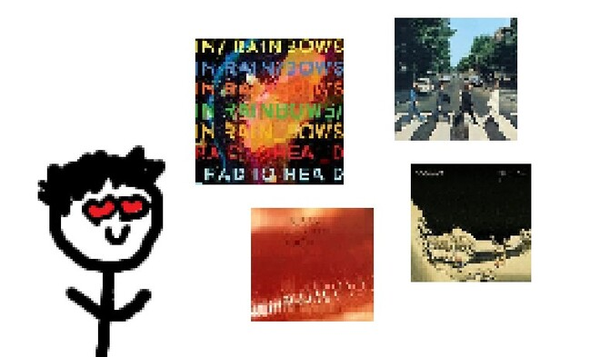
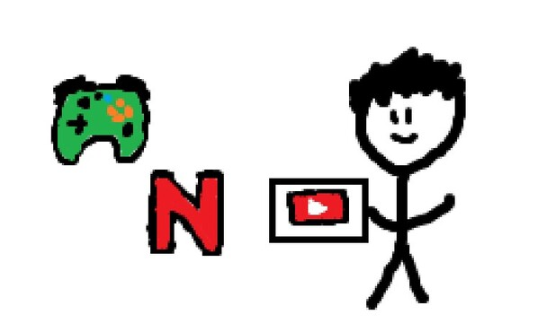
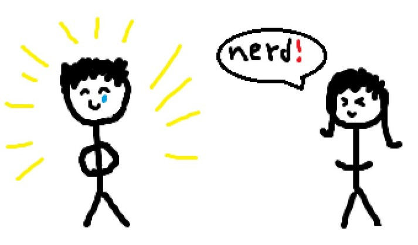
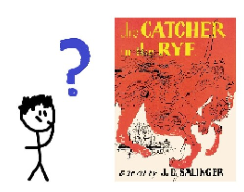

-
Q: what is my favorite color?
A: blue! it's apparently the most popular favorite color to have which i guess makes me a little basic.
i've read that it's a really popular pick because it's the rarest color in nature (excluding things like water, obviously).
-

-
Q: what are my hobbies?
A: sports and video games.
i've played soccer for seven years but recently switched over to doing cross country. while i still think that soccer is much more enjoyable, i found it
stressful to play in a team. as a defender, i was always worried about messing up and being blamed for a loss. i can't even imagine how much stress goalies go through.
cross country is less stressful and is almost as fun.
for video games, i exclusively play multiplayer play games with competitive modes. i should probably stop playing these games but i might be a little addicted.
so yeah: league of legends, rocket league, fortnite, valorant are the games i play the most. probably only considered good at rocket league though (league of legends needs to fix their matchmaking fr)
i did enjoy omori and undertale though..
-

-
do you listen to music?
Q: YES. i started in middle school when i listened to the radio while doing my homework. over time i found various online communities that gave me music recommendations.
then i started the classic pipeline: youtube playlists --> wait spotify is better --> i want to make good playlists to share --> youtube reviewers (really like toddintheshadows) -->
i want to make my own reviews --> rateyourmusic.com layout sucks.
i also played the piano for two years. playing an instrument doesn't make you like music though. the true way is to be forced to listen to the same five hot 100
pop songs everytime you turn on the radio.
-

-
Q: what other forms of media do you consume? (definitely a frequently asked question)
A: i used to watch a lot of movies but nowdays if a new movie comes out i'll just wait a couple of months for the cinemasins video on it. it's pretty much the same thing.
if people tell me to watch a show i will read the plot of it on wikipedia, see if netflix has it, then watch like three episodes before stopping.
i watch youtube all the time though. i enjoy comedy channels like casually explained, apandah, and technoblade (rip) as well as philosophy channels like
exurb1a and sisyphus 55.
speaking of youtube, i have my own channel! actually, i've had many but i've since deleted them. my current one has 20 subscribers and it's mostly just
video game clips. i still have a lot of my older videos saved and i might upload them in the future.
-

-
Q: how would you describe yourself as a person?
A: i am pretty introverted although i hope to change that in the future. my motivation to work is volatile but i generally get things done. a big belief of mine is that one is a product of their environment.
staying true to this i would describe myself as smart and overly emotional.
-

-
Q: what are your future plans?
A: i'm graduating high school in a few years and have been very stressed out due
to wanting to get into university. why? my parents are both first-generation students. they are not originally from the US
and getting their bachelor's degree was the sole reason why they were able to move out of the third-world country they used to live in. my mom specifically, lived in poverty
and had an abusive dad (alcohol...) who believed that women weren't supposed to get an education.
that's a whole other story and i kind of got off topic..
in short my plans are just going to a good univeristy and getting a job that pays enough so that i can start a family and be able to enjoy my hobbies.
-

yes this is the right image
{kind=link}
{kind=link}
{kind=link}
{kind=link}
{kind=link}
{kind=link}